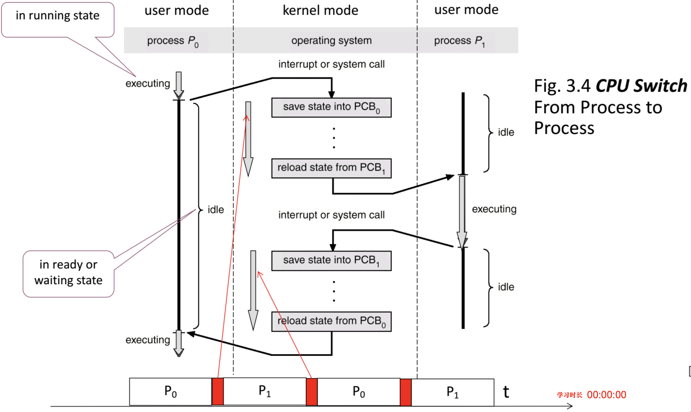
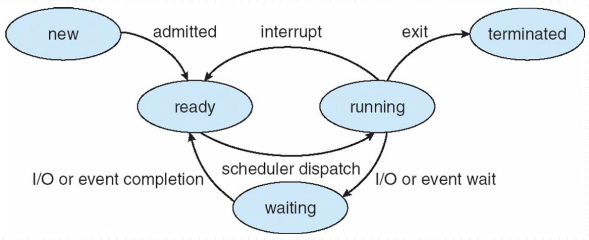
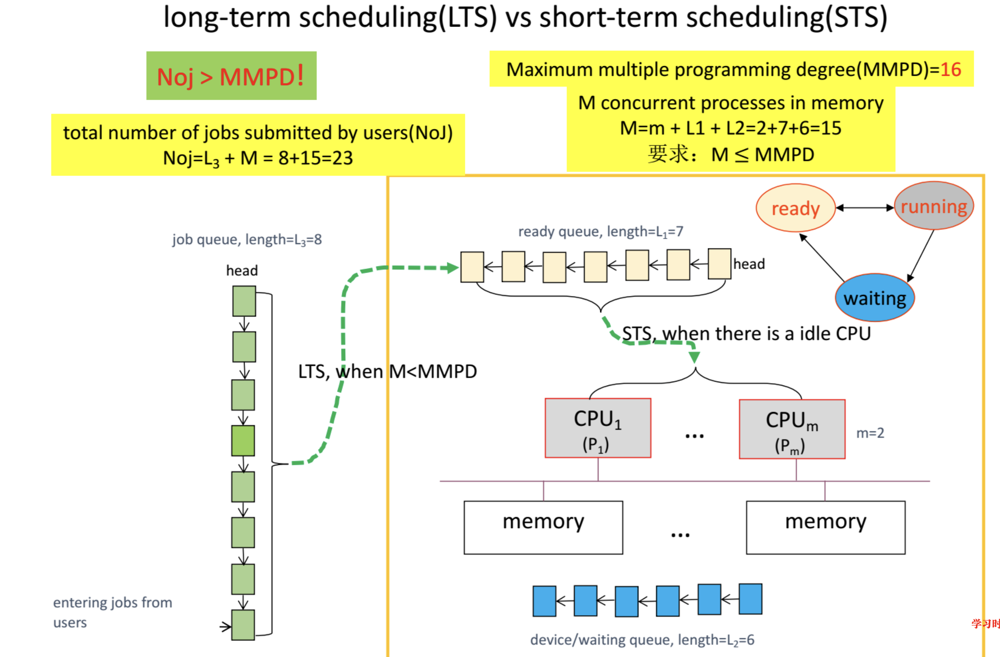
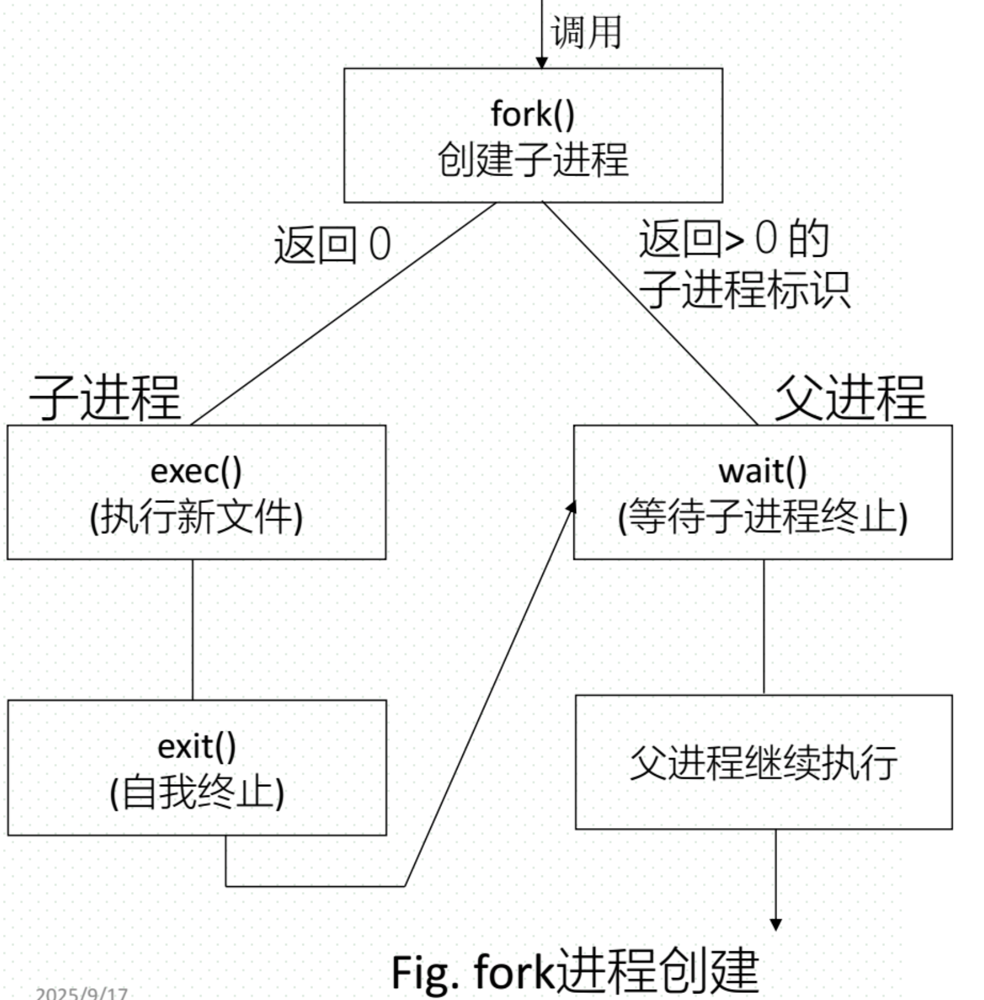

CH3--Process
Process
1. Definition
Process is a running program, it is dynamic.
The smallest unit of resource allocation.
Att:
- the execution of process must follow by sequence.
- process entity = PCB + code segment + data
PCB is the unique identification of Process, if the process was killed, the PCB also killed.
2. Process switch

context switch: save the current process into PCB and reload a process
3. States of Process
- new : the process is being created
- ready : the process has distributed resouces and waiting the CPU distributed.
- running : executing
- waiting : event occur
- terminated : finished process

4. Process scheduling – maximum CPU utilization
preserve 3 queue
- job queue
- device queue
- ready queue
Multiple programming degree : the maxmium numbers of process that was admitted in memory
( ready+job+device )
Long Term scheduler : LTS decide who can put into the ready queue from job queue
When $M \lt MMPD$ it work
$M = m + ready_{queue} + device_{queue}$
m is the process number that are running on the CPU
Short Term scheduler : STS decide who can put into CPU from ready queue when CPU is leisurely
When CPU is leisurely it work

5. Operations of Process
When Create a new process
- the result has two different execution mode
- father and son concurrently execution
- father waiting his son finished execution
- their has two allocated method of resources
- the son is the copier of father
- data of the son loaded into the new code segment

fork() : create a new process, return value = 0 signify it is a son process else if > 0 that is father process.
wait() : father process is waiting his son process finished, it will return state and pid (son process).
exec() : loading new data into the memory
abort() : father kill the son process
The States of son process
- Zombie : son process call exit() killed itself, but the father process has not call wait() before.
- Orphan : the father has not call wait() before it killed itself
6. Interprocess Communication (IPC)
Two Models
- Shared memory : work in user mode.
- OS distribute a special shared area for every process to use, every can write or read in the area.
- they used the area to communicate
- Message passing : work in kernal mode.
- OS must provide send() and receive() methods for every process to communicate.
- direct or undirect, undirect should use mailbox.